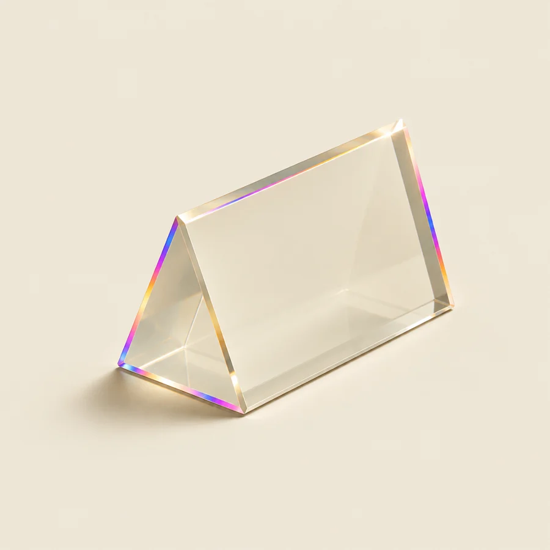
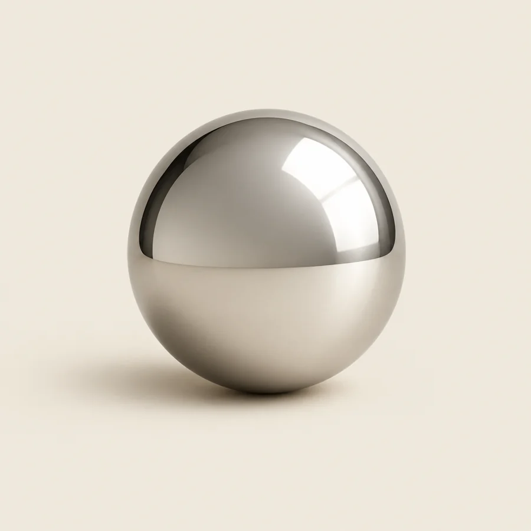
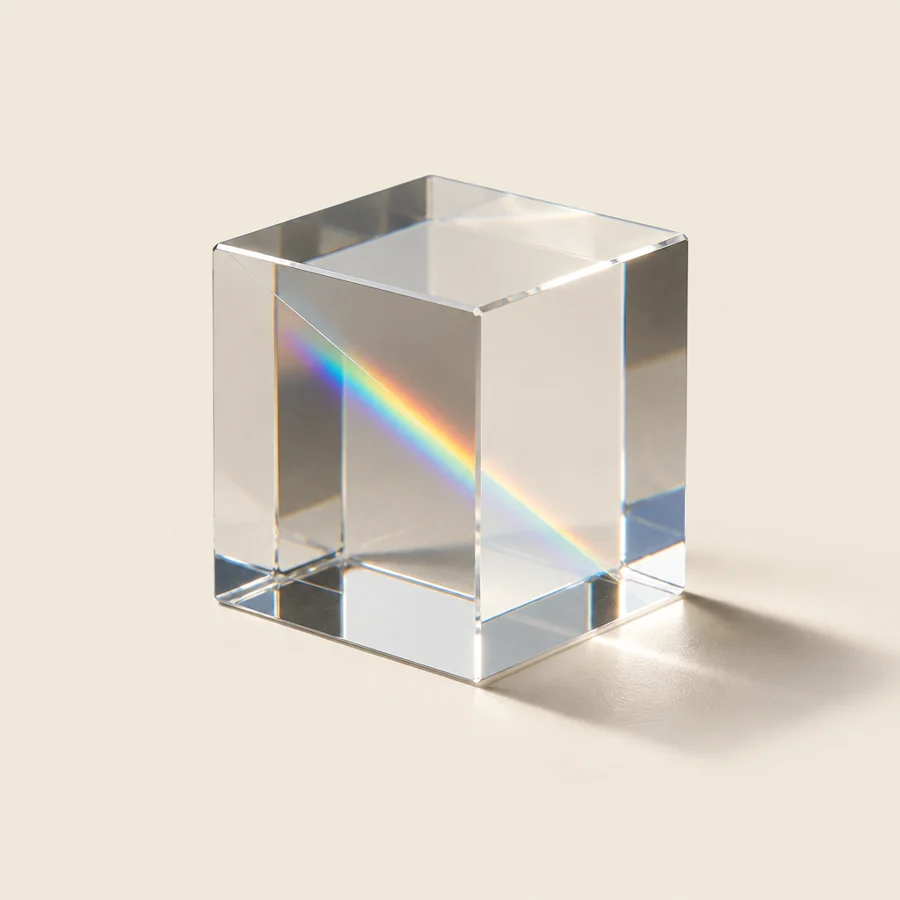
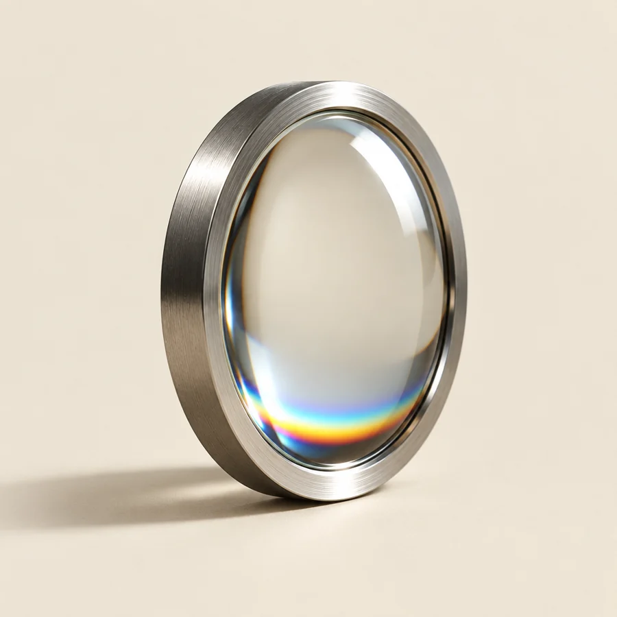

Where the name comes from
In 1666 Isaac Newton closed the shutters, let one beam of sunlight into a dark room, and put a prism in its way. Everyone believed the glass was colouring the light. He proved the colours had been in the light all along.

The dark room
Drag across the room, or use the slider. Every colour bends by a slightly different amount, and that difference is the whole rainbow.
One beam of white light
Three things the prism proved

The prism doesn't paint anything. It bends each colour a little differently, so the ones travelling together finally come apart.

Newton let a single colour through a second prism. It bent, but it didn't split again. Each colour was its own thing the whole time.

Gather the spectrum through a lens and it comes back as white light. Taken apart and put back together, nothing is lost.
The studio, in one experiment
An ad that already worked is white light: everything it does, travelling together, too fast to see. The machine is the prism.
Proof, not a guess. The market already paid for it.
Hook, beats, argument and offer, bent apart so each one can be seen.
Hooks, variations, statics, emails, pages. They were in the ad all along.
Gathers it back together for your brand, and nothing that worked is lost.
The spark: Cosmos: A Spacetime Odyssey, “Hiding in the Light” (2014), which tells how people learned to take light apart. The experiment: Isaac Newton's prism experiments, begun in 1666 and published in Opticks (1704). The dark room above is a real simulation: Snell's law at every face, with glass that bends violet more than red.